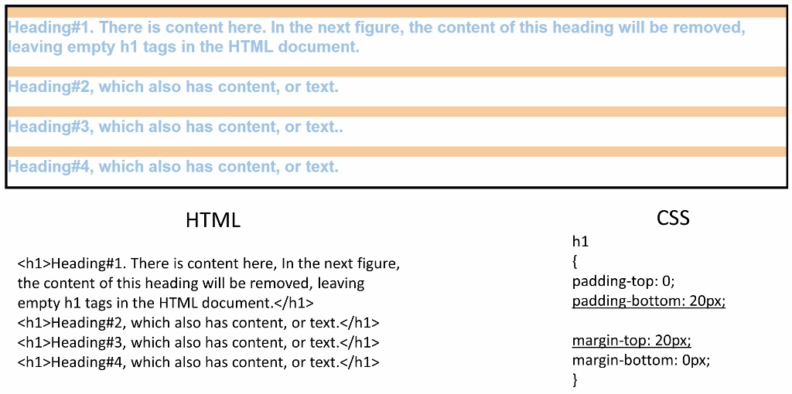
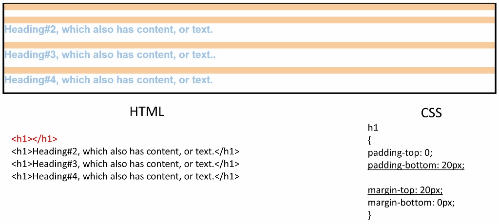
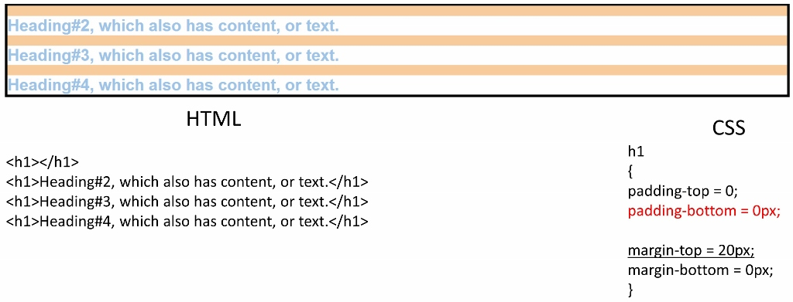
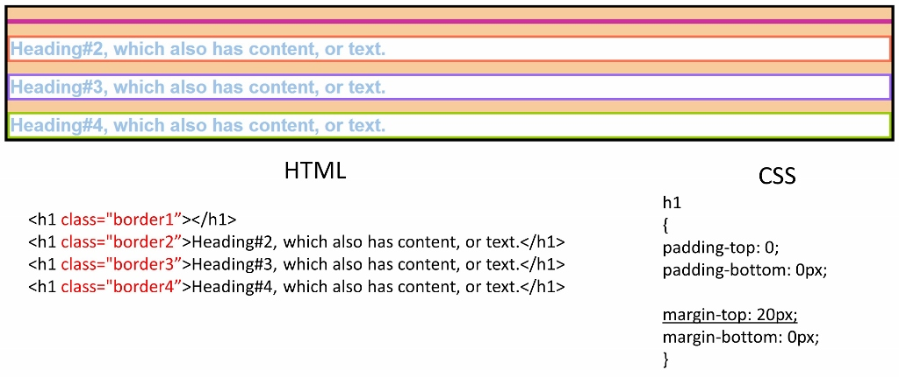
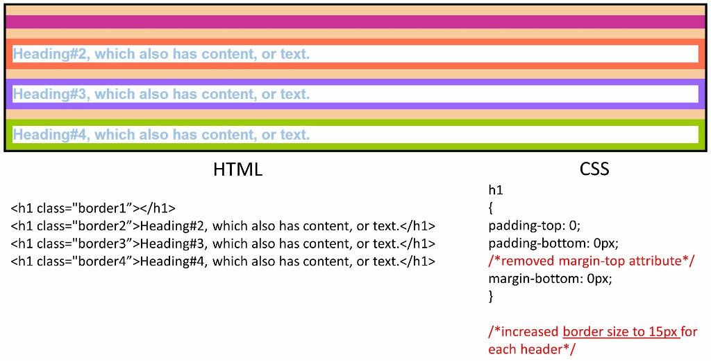
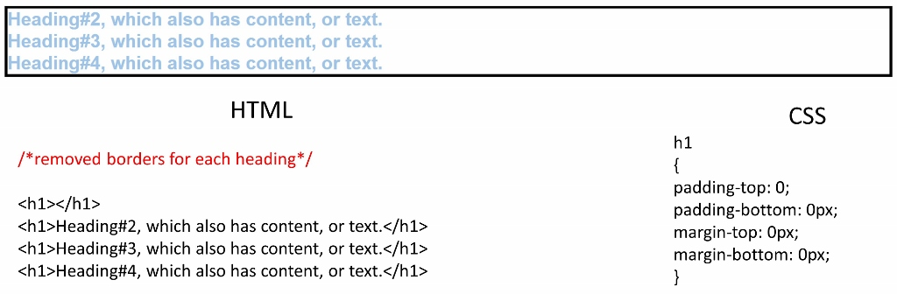

Padding, Margin, and Borders: The Three Amigos of Spacing
When I first started out with HTML and CSS (so like, 10 days ago), these attributes could hardly be labeled with such an amicable term. The difference between the three seemed so simple when I would read about it, but somehow in practice they appeared to cause so many delightful little quirks to the layout of a web page. Incidentally, they weren't so much amigos as they were a trifecta of confusion made by el diablo.
But I think I'm getting a handle on them. Rather than giving the same explanation with the same diagram that new web developers have inevitably seem multiple times, I thought it would be best to go through an example wherein I tinkered with the padding, margin, and borders of the heading elements within a single div.
Note that for the "CSS" code column within each figure, any attributes set to a value greater than 0 are underlined. In addition, in each subsequent figure, the code that has been modified appears in red text.
The figure above is our starting point. For each header, the top margin has been set to 20px; top margin area is represented by the orange stripes. Note that this is solely for demonstration purposes, as padding and margin cannot be set to specific colors. Rather, they are attributes to help with spacing, so they take on the background color of the parent container. (Thus I was able to represent the margin areas for each header by setting the background color of the div to orange.)
The bottom padding for each header is set to 20px. I intentionally did not attempt to represent padding with color because A) there's not really an easy way to differentiate the "padding" area in CSS, and B) it gets confusing to see where each element begins and ends when there are too many colors. However, you can see that there is significantly greater white space underneath each blue heading than there is above it. That's because the bottom padding is set to 20px, whereas the top padding is set to 0.
Observation: Since each white box represents an individual heading element, you can see that have a padding greater than 0 will add to the size of the element.
Question: What happens if the content of Heading#1 is removed? Let's find out:
Although the text of Heading#1 has been removed, there is still an h1 tag in the HTML.
Observation: The padding-bottom attribute still applies to Heading#1 even though that element is empty. So that first strip of white space in the div is the bottom padding for Heading#1.
Question: What if we reduce the bottom padding to 2px?

The amount of white space below each piece of blue text got smaller because the bottom padding was reduced. You can see that the padding-bottom for Heading#1 is still there, but smaller, as represented by skinny white line.
Observation: Those first two orange strips, which represents the margin-top of Heading#1 and the margin-top of Heading#2, are extremely close together now, separated only by the 2-pixel bottom padding of Heading#1.
Question: What would happen if I get rid of that skinny white line at the top by setting the padding-bottom attribute to 0? Will the two top margins (the top two orange stripes) converge and make a super-margin of 40px?
Observation: The two top margins (for Heading#1 and Heading#2) did NOT converge into super margin! Why? Because the purpose of the margin is to create spacing between elements. Even though Heading#1 is technically there, it contains no text and no padding, so that element now takes up no space.
Here's another way of thinking about the margin situation: it's NOT as simple as "top element's margin-bottom + bottom element's margin-top = combined margin width between elements". That would be too intuitive.
The margin is an element's way of saying, "No one come any closer than this many pixels!" Therefore if the margin-bottom of the top element exceeds the margin-top of the element below it, the actual margin that appears between elements will be the bigger one.
This can be confusing, because padding does seem to operate by the additive equation. Remember, increasing the padding increases the space between the text and the edge of the element, thus affecting the size of that individual element.
Question: If we add a border to each heading, will the margin-top for Heading#1 re-appear?
Observation: The margin-top attribute for Heading#1 reappeared! The border is the only one of these three attributes that you can set to a color. The border is meant to be a visible, space-consuming part of an element, as opposed to just be an attribute that affects spacing within and between elements. Therefore, even though Heading#1 still has no text content, it takes up some space within the div because its purple border takes space within the div. This is why its margin-top attribute re-appeared.
Question: What happens when we increase the width of the borders, and REMOVE the margin-top attribute from the CSS?
Observation: Increasing the width of the borders increasing the size of the div, just as we observed with the padding. But why is there still orange space between those borders? Didn't we get rid of the margin-top attribute?
Question: What happens if you explicitly set the margin-top attribute to 0 rather than just removing that attribute altogether?

Observation: Aha! Now the orange has gone away altogether! This is because each heading element still has default settings. Thus there will always be somewhat of a top margin unless we specify otherwise. By setting the margin-top to 0, we override that default setting and make the margin disappear.
Question: What if we just set border, padding, and margin to 0?
Observation: This is now as compact as the headings can possibly be within the div.
Conclusion: Show your browser who's boss and just add a reset.css stylesheet to your page. That's an easier starting point. Then you can add the three spacing amigos as you so desire. Pretty spacing is a good thing. Sneaky lingering margins caused by default settings are not.